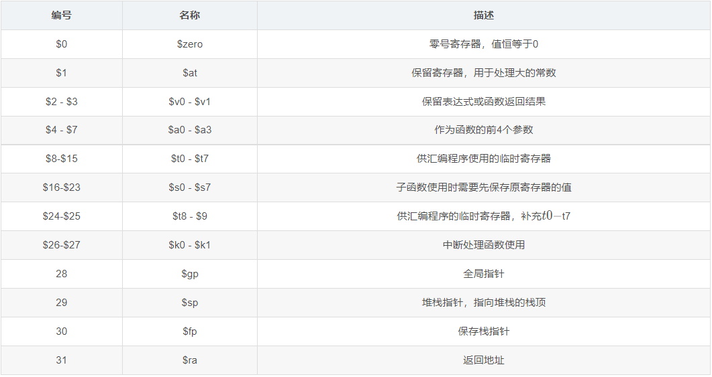
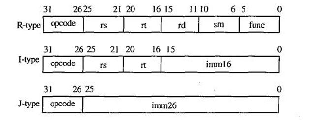
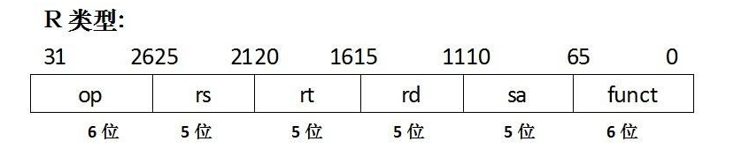
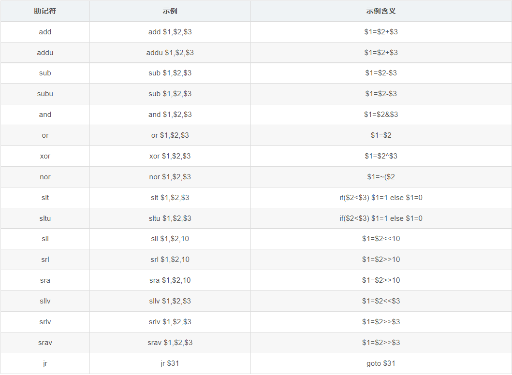
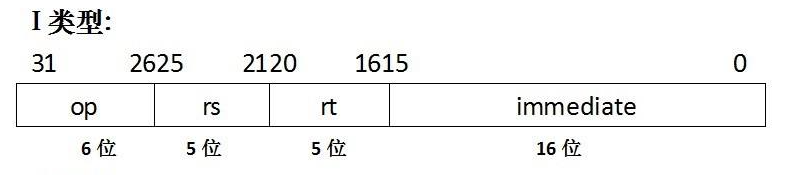
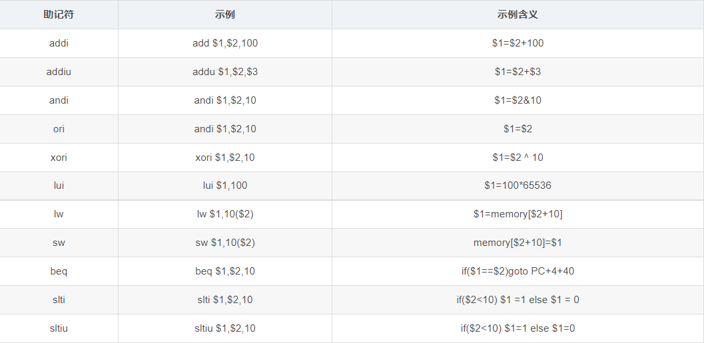
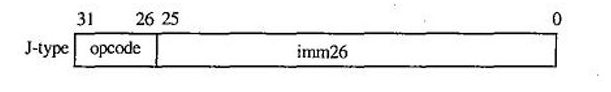
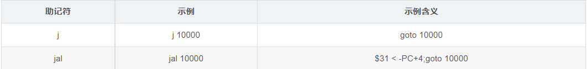

MIPS指令格式和寻址方式
MIPS架构是一种精简指令集（RISC）的处理器架构，包含大量的寄存器、指令数和字符。MIPS32的架构是固定长度的定期编码指令集，采用的是导入/存储(load/store)数据模型。
寄存器：
三种指令格式：

R-型指令是RR型指令：

操作码op为000000，操作类型由func字段指定，若要是双目运算类1指令，则rs和rt的内容分别作为第一和第二源操作数，结果送rd；若是移位指令，则对rt的内容进行移位，结果送rd，所移位数由shamt字段给出。因为一条指令需要左移或右移若干位，所以MIPS中移位指令多用桶型移位器实现以提高速度。R-型指令的寻址方式只有一种，就是寄存器寻址方式。

I-型指令：

I-型指令是立即数指令，若是双目运算类指令，则将rs的内容和立即数分别作为第一和第二源操作数，结果送rt；若是Load/Store指令，则将rs的内容和立即数符号扩展后的内容相加作为内存单元地址，Load指令将内存单元内容送rt，Store指令将rt内容送内存单元；若是条件转移(分支)指令，则对rs和rt内容进行指定的运算，根据运算的结果，决定是否转到转移目标地址处执行，转移目标地址通过相对地址寻址方式得到，即将PC的内容和立即数符号扩展后的内容相加得到。由此可知，I-型指令的寻址方式有4种，即寄存器寻址，立即数寻址，相对寻址，基址或变址寻址。

J-型指令：

J-型指令主要是无条件跳转指令，指令中给出的是26位直接地址，只要将当前PC的高4位拼上26位直接地址最后添两个0就可以得到32位的跳转目标地址。J-型指令的寻址方式只有一种，就是变通的直接寻址。
